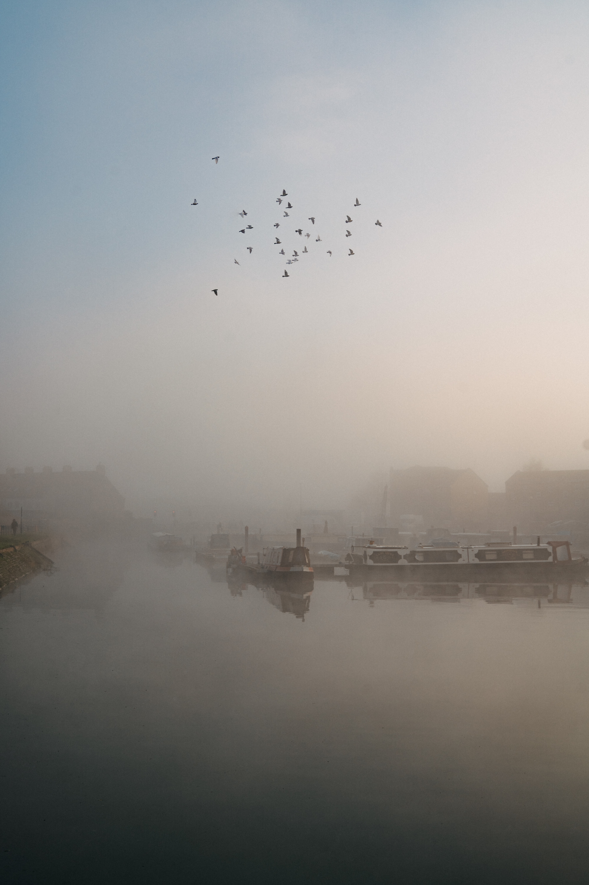

흰 집 건너 흰 집이 있어 살아가는 냄새를 희미하게 풍기고 있다. 거룩한 말은 이 종이에 어울리지 않아서 나 자신도 읽지 못하도록 흘려서 쓴다. 하늘은 어둡고, 바닥은 무겁고. 나는 다시는 오지 않을 사람을 가지게 되었고. 너는 말할 수 없는 말을 내뱉고 읽히지 않는 문장이 되었다. 낮잠에서 깨어나 문득 울음을 터뜨리는 유년의 얼굴로. 마음과 물질 사이에서 서성이는 눈빛으로. 인간 저 너머의 음역으로 움직이고 움직이면서.
돌보는 말과 돌아보는 말 사이에서
밀리는 마음과 밀어내는 마음 사이에서
사랑받은 적 없는 사람이 모르는 사이 하나하나 감정을 잃어버리듯이. 한밤의 고양이와 친해진 것은 어느 결에 사람을 저버리게 되었기 때문이다. 그냥 사람이라는 말. 그저 사랑이라는 말. 그러니 너는 마음 놓고 울어라. 그러니 너는 마음 놓고 네 자신으로 존재하여라. 두드리면 비춰 볼 수 있는 물처럼. 물은 단단한 얼굴을 가지고 있어서. 남겨진 것 이후를 비추고 있었다.
